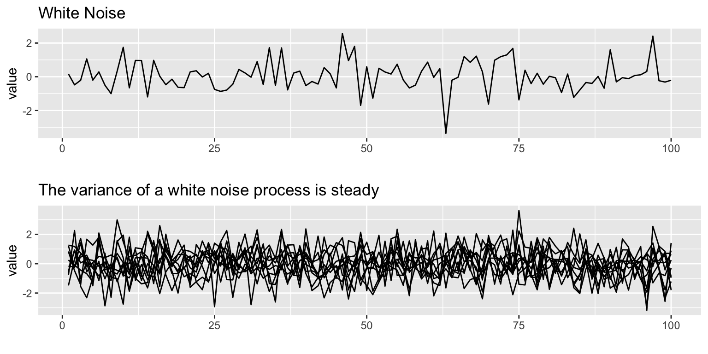
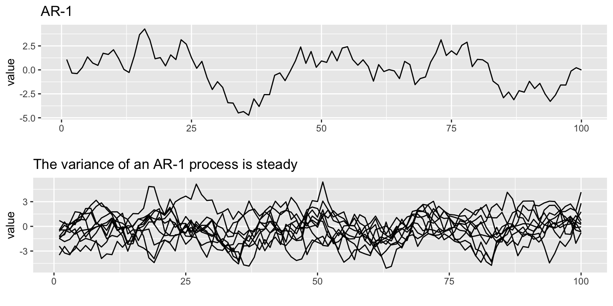
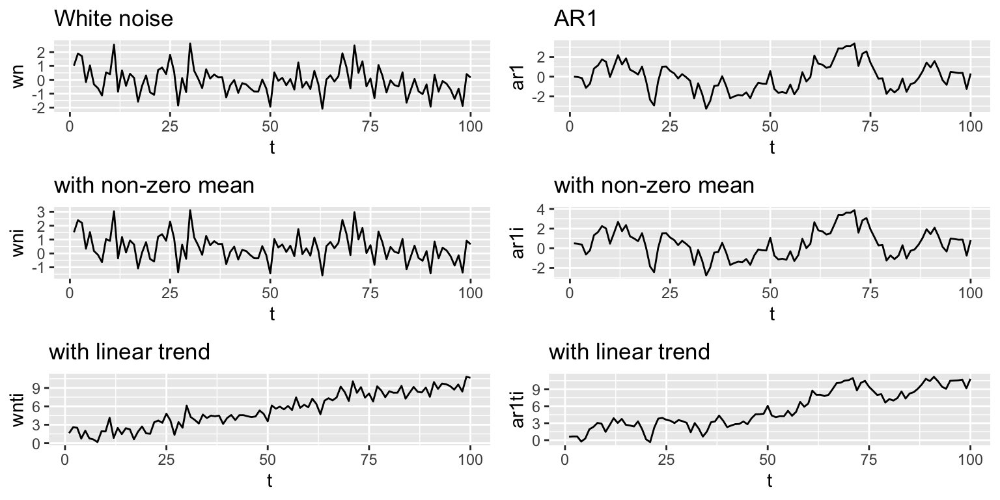
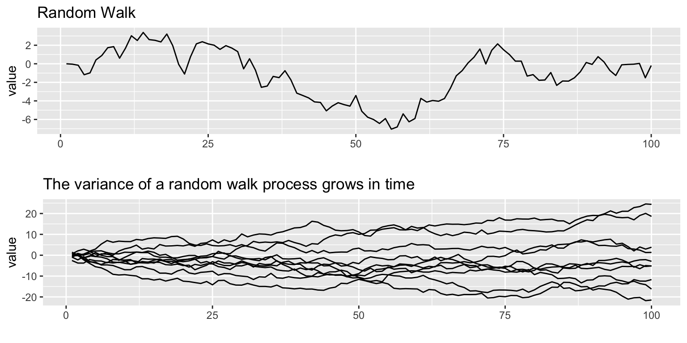
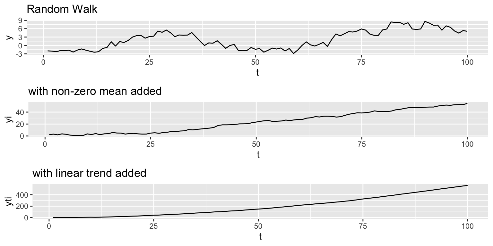
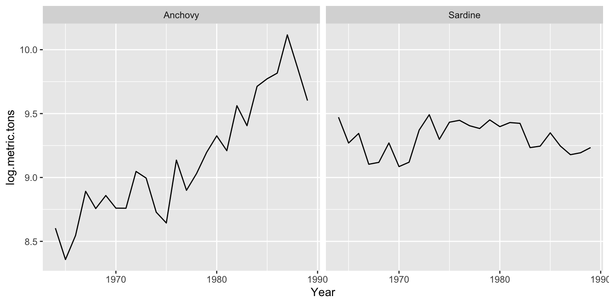
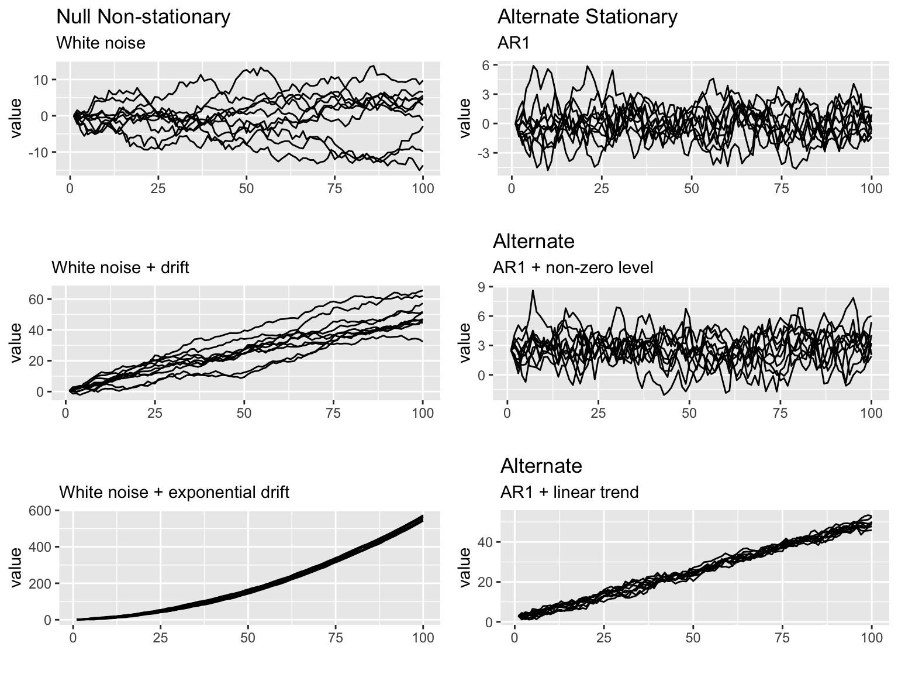

3.2 Stationarity
The first two steps of the Box-Jenkins Method have to do with evaluating for stationarity and correcting for lack of stationarity in your data:
A. Model form selection
- Evaluate stationarity and seasonality
- Selection of the differencing level (d)
- Selection of the AR level (p)
- Selection of the MA level (q)
B. Parameter estimation
C. Model checking
3.2.1 Definition
Stationarity means ‘not changing in time’ in the context of time-series models. Typically we test the trend and variance, however more generally all statistical properties of a time-series is time-constant if the time series is ‘stationary’.
Many ARMA models exhibit stationarity. White noise is one type: \[x_t = e_t, e_t \sim N(0,\sigma)\]
## Loading required package: gridExtra## Loading required package: reshape2
An AR-1 process with \(b<1\) \[x_t = b x_{t-1} + e_t\] is also stationary.

Stationarity around a trend
The processes shown above have mean 0 and a flat level. We can also have stationarity around an non-zero level or stationarity around an linear trend. If \(b=0\), we have white noise and if \(b<1\) we have AR-1.
Non-zero mean: \(x_t = \mu + b x_{t-1} + e_t\)
Linear trend: \(x_t = \mu + at + b x_{t-1} + e_t\)

3.2.2 Non-stationarity
One of the most common forms of non-stationarity that is tested for is ‘unit root’, which means that the process is a random walk: \[x_t = x_{t-1} + e_t\] .

Non-stationarity with a trend
Similar to the way we added an intecept and linear trend to the stationarity processes, we can do the same to the random walk.
Non-zero mean or intercept: \(x_t = \mu + x_{t-1} + e_t\)
Linear trend: \(x_t = \mu + at + x_{t-1} + e_t\)
The effects are fundamentally different however. The addition of \(\mu\) leads to a upward mean linear trend while the addition of \(at\) leads to exponential growth.

3.2.3 Stationarity tests
Why is evaluating stationarity important?
- Many AR models have a flat level or trend and time-constant variance. If your data do not have those properties, you are fitting a model that is fundamentally inconsistent with your data.
- Many standard algorithms for fitting ARIMA models assume stationarity. Note, you can fit ARIMA models without making this assumption, but you need to use the appropriate algorithm.
We will discuss three common approaches to evaluating stationarity:
- Visual test
- (Augmented) Dickey-Fuller test
- KPSS test
Visual test
The visual test is simply looking at a plot of the data versus time. Look for
- Change in the level over time. Is the time series increasing or decreasing? Does it appear to cycle?
- Change in the variance over time. Do deviations away from the mean change over time, increase or decrease?
Here is a plot of the anchovy and sardine in Greek waters from 1965 to 1989. The anchovies have an obvious non-stationary trend during this period. The mean level is going up. The sardines have a roughly stationary trend. The variance (deviations away from the mean) appear to be roughly stationary, neither increasing or decreasing in time.

Although the logged anchovy time series is increasing, it appears to have an linear trend.
Dickey-Fuller test
The Dickey=Fuller test (and Augmented Dickey-Fuller test) look for evidence that the time series has a unit root.
The null hypothesis is that the time series has a unit root, that is, it has a random walk component.
The alternative hypothesis is some variation of stationarity. The test has three main verisons.
Visually, the null and alternative hypotheses for the three Dickey-Fuller tests are the following. It is hard to see but in the panels on the left, the variance around the trend is increasing and on the right, it is not.

Mathematically, here are the null and alternative hypotheses. In each, we are testing if \(\delta=0\).
- Null is a random walk with no drift \(x_t = x_{t-1}+e_t\)
Alternative is a mean-reverting (stationary) process with zero mean. \(x_t = \delta x_{t-1}+e_t\)
- Null is a random walk with drift (linear STOCHASTIC trend) \(x_t = \mu + x_{t-1} + e_t\)
Alternative is a mean-reverting (stationary) process with non-zero mean and no trend. \(x_t = \mu + \delta x_{t-1} + e_t\)
- Null is a random walk with exponential trend \(x_t = \mu + at + x_{t-1} + e_t\)
Alternative is a mean-reverting (stationary) process with non-zero mean and linear DETERMINISTIC trend. \(x_t = \mu + at + \delta x_{t-1} + e_t\)
Example: Dickey-Fuller test using adf.test()
adf.test() in the tseries package will apply the Augemented Dickey-Fuller and report the p-value. We want to reject the Dickey=Fuller null hypothesis of non-stationarity. We will set k=0 to apply the Dickey-Fuller test which tests for AR(1) stationarity. The Augmented Dickey-Fuller tests for more general lag-p stationarity.
adf.test(x, alternative = c("stationary", "explosive"),
k = trunc((length(x)-1)^(1/3)))x is the time-series data in vector or ts form. Here is how to apply this test to the anchovy data
##
## Augmented Dickey-Fuller Test
##
## data: anchovy87ts
## Dickey-Fuller = -2.8685, Lag order = 0, p-value = 0.2415
## alternative hypothesis: stationaryThe null hypothesis is not rejected. That is not what we want.
Example: Dickey-Fuller test using ur.df()
The urca R package can also be used to apply the Dickey-Fuller tests. Use lags=0 for Dickey-Fuller which tests for AR(1) stationarity. We will set type="trend" to deal with the trend seen in the anchovy data. Note, adf.test() uses this type by default.
ur.df(y, type = c("none", "drift", "trend"), lags = 0)##
## ###############################################################
## # Augmented Dickey-Fuller Test Unit Root / Cointegration Test #
## ###############################################################
##
## The value of the test statistic is: -2.8685 4.0886 4.7107ur.df() will report the test statistic. You can look up the values of the test statistic for different \(\alpha\) levels using summary(test) or attr(test, "cval"). If the test statistic is less than the critical value for \(\alpha\)=0.05 (‘5pct’ in cval), it means the null hypothesis of non-stationarity is rejected. For the Dickey-Fuller test, you do want to reject the null hypothesis.
The test statistic is
## tau3 phi2 phi3
## statistic -2.86847 4.088559 4.71069and the critical value at \(\alpha = 0.05\) is
## 1pct 5pct 10pct
## tau3 -4.38 -3.60 -3.24
## phi2 8.21 5.68 4.67
## phi3 10.61 7.24 5.91The statistic is larger than the critical value and thus the null hypothesis of non-stationarity is not rejected. That’s not what we want.
Augmented Dickey-Fuller test
The Dickey-Fuller test assumes that the stationary process is AR(1) (autoregressive lag-1). The Augmented Dickey-Fuller test allows a general stationary process. The idea of the test however is the same.
We can apply the Augmented Dickey-Fuller test with the ur.df() function or the adf.test() function in the tseries package.
adf.test(x, alternative = c("stationary", "explosive"),
k = trunc((length(x)-1)^(1/3)))The alternative is either stationary like \(x_t = \delta x_{t-1} + \eta_t\) with \(\delta<1\) or ‘explosive’ with \(\delta>1\). k is the number of lags which determines the number of time lags allowed in the autoregression. k is generally determined by the length of your time series.
Example: Augmented Dickey-Fuller tests with adf.test()
With the tseries package, we apply the Augmented Dickey-Fuller test with adf.test(). This function uses the test where the alternative model is stationary around a linear trend: \(x_t = \mu + at + \delta x_{t-1} + e_t\).
##
## Augmented Dickey-Fuller Test
##
## data: anchovy87ts
## Dickey-Fuller = -0.57814, Lag order = 2, p-value = 0.9685
## alternative hypothesis: stationaryIn both cases, we do not reject the null hypothesis that the data have a random walk. Thus there is not support for these time series being stationary.
Example: Augmented Dickey-Fuller tests with ur.df()
With the urca package, we apply the Augmented Dickey-Fuller test with ur.df(). The defaults for ur.df() are different than for adf.test().
ur.df() allows you to specify which of the 3 alternative hypotheses you want: none (stationary around 0), drift (stationary around a non-zero intercept), trend (stationary around a linear trend).
Another difference is that by default, ur.df() uses a fixed lag of 1 while by default adf.test() selects the lag based on the length of the time series.
We will specify “trend” to make the test similar to adf.test(). We will set the lags like adf.test() does also.
##
## ###############################################################
## # Augmented Dickey-Fuller Test Unit Root / Cointegration Test #
## ###############################################################
##
## The value of the test statistic is: -0.5781 3.2816 0.8113The test statistic values are the same, but we need to look up the critical values with summary(test).
KPSS test
In the Dickey-Fuller test, the null hypothesis is the unit root, i.e. random walk. Often times, there is not enough power to reject the null hypothesis. A null hypothesis is accepted unless there is strong evidence against it.
The Kwiatkowski–Phillips–Schmidt–Shin (KPSS) test has as the null hypothesis that a time series is stationary around a level trend (or a linear trend). The alternative hypothesis for the KPSS test is a random walk.
The stationarity assumption is general; it does not assume a specific type of stationarity such as white noise.
If both KPSS and Dickey-Fuller tests support non-stationarity, then the stationarity assumption is not supported.
Example: KPSS tests
##
## KPSS Test for Trend Stationarity
##
## data: anchovy87ts
## KPSS Trend = 0.19182, Truncation lag parameter = 2, p-value = 0.01907Here null="Trend" was included to account for the increasing trend in the data. The null hypothesis of stationarity is rejected. Thus both the KPSS and Dickey-Fuller tests support the hypothesis that the anchovy time series is non-stationary. That’s not what we want.
3.2.4 Differencing the data
Differencing the data is used to correct non-stationarity. Differencing means to create a new time series \(z_t = x_t - x_{t-1}\). First order differencing means you do this once (so \(z_t\)) and second order differencing means you do this twice (so \(z_t - z_{t-1}\)).
The diff() function takes the first difference:
## [1] 1 2 3 4The second difference is the first difference of the first difference.
## [1] 1 1 1Here is a plot of the anchovy data and its first difference.
par(mfrow=c(1,2))
plot(anchovy87ts, type="l")
title("Anchovy")
plot(diff(anchovy87ts), type="l")
title("Anchovy first difference")Let’s test the anchovy data with one difference using the KPSS test.
## Warning in tseries::kpss.test(diff.anchovy): p-value greater than printed p-
## value##
## KPSS Test for Level Stationarity
##
## data: diff.anchovy
## KPSS Level = 0.28972, Truncation lag parameter = 2, p-value = 0.1The null hypothesis of stationairity is not rejected. That is good.
Let’s test the first difference of the anchovy data using the Augmented Dickey-Fuller test. We do the default test and allow it to chose the number of lags.
##
## Augmented Dickey-Fuller Test
##
## data: diff.anchovy
## Dickey-Fuller = -4.2126, Lag order = 2, p-value = 0.01584
## alternative hypothesis: stationaryThe null hypothesis of non-stationarity is rejected. That is what we want. However, we differenced which removed the trend thus we are testing against a more general model than we need. Let’s test with an alternative hypothesis that has a non-zero mean but not trend. We can do this with ur.df() and type='drift'.
The null hypothesis of NON-stationairity IS rejected. That is good.
The test statistic is
## tau2 phi1
## statistic -3.492685 6.099778and the critical value at \(\alpha = 0.05\) is
## 1pct 5pct 10pct
## tau2 -3.75 -3.00 -2.63
## phi1 7.88 5.18 4.123.2.5 Summary
Test stationarity before you fit a ARMA model.
- Visual test: is the time series flutuating about a level or a linear trend?
Yes or maybe? Apply a “unit root” test.
- (Augmented) Dickey-Fuller test
- KPSS test
No or fails the unit root test.
- Apply differencing again and re-test.
Still not passing?
- Try a second difference.
Still not passing?
- ARMA model might not be the best choice. Or you may need to an adhoc detrend.